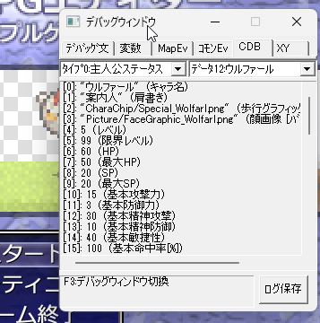
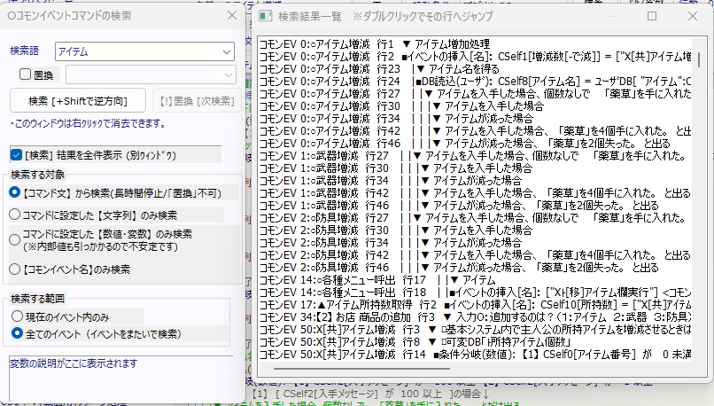
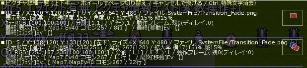

| ※このページの更新履歴は上が新しい内容です 【Ver3.724のアップデート内容】 2026/9/6 ↑トップへ 【エディター部の修正】 ●【ファイル選択ウィンドウ/不具合】 サウンド再生時、音量ゲージを小さくしていても 再生位置を変更すると80％くらいの音量で再生されてしまうバグ修正 ●【データベースウィンドウ/不具合】 Shift押しながら「検索」したとき、一つの文字列内で 正常に逆順に検索されなかったバグを修正 【Ver3.723のアップデート内容】 2026/8/31 ↑トップへ 【ゲーム部の修正】 ●【ピクチャ/不具合】 「ファイル名」を「character\cself[10].png」のように特殊文字を含む形で 指定してピクチャを繰り返し「表示」した際、 画像キャッシュが正しく再利用されずにスプライト数が増え続け、 最終的に「総スプライト数が32000を超えました！」というエラーが 出る場合がある不具合を修正。 ●【ピクチャ/不具合】 XY配列画像へ変換エフェクトを適用したピクチャを再表示する際、 元画像が未解放になるケースがあった問題を修正 ●【サウンド/不具合】 「BGS」のみ、「ファイル名で指定」で再生した際に 「LOOPSTART」が無視されてしまっていたバグを修正 【Ver3.722のアップデート内容】 2026/8/22 ↑トップへ 【ゲーム部の修正】 ●【ダウンロード/不具合】 Ver3.714以降で発生していた、 保存フォルダ「保存しない」チェックボックスを有効にすると、 「格納先の文字列変数」に何も格納されなくなくなるバグ修正 【Ver3.721のアップデート内容】 2026/8/20 ↑トップへ 【ゲーム部の修正】 ●【デバッグウィンドウ/不具合】 デバッグウィンドウの「CDB」項目で、 「DB参照」「1つ前のタイプ」IDに対応するデータ名が 表示されなかった問題を修正 【エディター部の修正】 ●【緑帯エラーF2時のエディター挙動/不具合】 ゲーム側で緑帯エラーになった時にF2を押すと エディター画面の最大化が解除されるバグを修正 【Ver3.720のアップデート内容】 2026/8/16 ↑トップへ 【ゲーム部の修正】 ●【セーブ・ロード処理/不具合】 32768バイト以上の文字列を含む「文字列ピクチャ」が 表示されているときにセーブするとクラッシュするバグ修正 【Ver3.719のアップデート内容】 2026/8/14 ↑トップへ 【エディター部の修正】 ●【プロ版･ゲームデータ作成/不具合】 プロテクトキーありの「ChaCha20」の暗号化に限り、 毎回内部キーが変わってしまっていたバグを修正 → これにより、部分的に「.wolf」ファイルを差し替えてアップデートするという パッチ方式がChaCha20だけ作れなくなっていました。 このバージョンからキーが固定化されるので、パッチが作成可能になります。 【Ver3.718のアップデート内容】 2026/8/11 ↑トップへ 【新機能】 ●【ゲームデータ作成/新機能】 「【ブラウザウディタ】での動作を許可する」チェックを追加。 オンにするとBasicDataフォルダに「BrowserWoditor.dat」が作成されます。 → このファイルがない場合、ブラウザウディタ上では動作しなくなります。 ブラウザウディタはruka様が開発されたツールです。 （ ruka様の開発Ci-enページ https://ci-en.net/creator/12702 ） 【ゲーム部の修正】 ●【デバッグウィンドウ/不具合】 デバッグウィンドウがあるとき、特定操作をすると プロセスがバッググラウンドに残り続けてしまうように なっていたバグの修正を試みました。 （これにより、デバッグウィンドウの更新タイミングがまた変更されています） 【Ver3.717のアップデート内容】 2026/8/7 ↑トップへ 【ゲーム部の修正】 ●【動作指定･自動移動/不具合】 当たり判定0.5マスのときに無意味なジグザグ移動が発生するバグ修正 ●【デバッグウィンドウ/調整】 デバッグウィンドウの「システム変数・システム文字列」の更新頻度を大幅に高速化 ●【デバッグ文/調整】 変数監視「ValWatch」機能を使ったとき、 「16000XX（コモンセルフX）」などを指定したときに内部的に 呼び出し値が「15YYYYXX（コモンYのセルフ変数X）」に変わっているのが 分かりやすくなるよう修正。 → たとえばコモンイベント3で1600002(コモンセルフ変数2)を指定したとき、 「# 開始 変数監視=> 1600002 => 15000302」と表示されるようになります。 ※15000302=コモンイベント3のコモンセルフ変数2 【Ver3.715～3.716のアップデート内容】 2026/8/4 ↑トップへ 【新機能】 ●【Game デバッグウィンドウ/新機能】 「デバッグ文」タブ内にて、「-->[ｺﾓﾝEv5/123行]」のように 「イベント行数」が表示されている行をクリックして 「F2」キーを押すと、Editor側でその行を開くことができる機能を追加 → 支援ツール『Wodistant』( https://alpha-stella.com/tool/wodistant/ )の 機能を参考にさせていただきました！ ●【Game 緑帯エラー時/新機能】 緑帯のエラーが表示され、「* F2で開く」と表示されている場合に 「F2」キーを押すと、Editor側の該当位置を開く機能を追加。 エラー箇所を開くのが楽になります。 【ゲーム部の修正】 ●【デバッグウィンドウ/不具合】 「文字列変数」の文字数が大きくなりすぎるとクラッシュするバグに対策。 → 文字列変数はウィンドウ上では1000バイト分まで表示され、 「ログ保存」すると省略された部分も含め完全な文字列が出力されます。 ●【デバッグウィンドウ/調整】 ・S、Cself、SysS、可変DBの文字列項目などの 文字列変数内の「特殊文字」が読めるように。 ・「Ctrl」を押している間だけ特殊文字をカットして表示できる裏技を入れています。 ●【デバッグウィンドウ/調整】 マップイベントの行数表記を[MapEv3/12行]から[Map2/Ev3/P1/12行]に変更。 上記の「イベント行数へのジャンプ」機能に合わせた変更です。 ●【システム文字列/仕様変更】 「SysS55:[読]Ev実行経路」の表記を以下のように修正。 これにより、デバッグウィンドウで表示されている際にも、 途中経路に対する上記の「F2」ジャンプ機能にも対応しました。 （Common240 line2 の行でF2を押すとコモン240の2行目に飛ぶ） 【古いSysS55表記】 Ev55 line2 -> Ev55 Common240 line2 【新しいSysS55表記】(Ver3.716で再修正） Map7 Ev55 P1 line2 -> Common240 line2 ※新しい表記のどの行でもF2を押すとEditorでその行を開くことができます。 ※緑帯エラー時の表記もこれに統一されます。 ●【デバッグウィンドウ/調整】 デバッグウィンドウで変数タブを見られる条件を微調整。 Editorからテストプレイ起動する場合は特に変化なく使えます。 ●【ファイル読み込み・書き込み/調整】 長いファイルパスのせいで正常にファイル読み書きができないときに 自動で作られる「WOLF_GamePath_XXXXX_XXXXX」フォルダを、 なるべくWindowsのテンポラリフォルダ内に作るように修正 → このフォルダ内には長いパスでもアクセスできるようにするための 「短い別名(ジャンクション)」データが一時的に作られています。 （ゲーム終了すると消えます） 【エディター部の修正】 ●【変数操作/不具合】 変数操作コマンドを「編集」した際、元々指定されていた「代入先」の変数が 本来とは違う変数タイプ（Self/変/Sys）に切り替えたときにも プルダウンメニューの一番下に表示されてしまう現象を修正 ●【起動/調整】 起動時バナーの表示が少しだけ安定。％がより細かく変化するように。 【Ver3.714のアップデート内容】 2026/7/28 ↑トップへ 【新機能】 ●【デバッグウィンドウ/新機能】 デバッグウィンドウで変数を見られる処理を追加。 Editorからテストプレイを開始した場合のみ、現在の 「変数（通常変数、予備変数1～9、文字列変数、システム変数、システム文字列）」 「MapEv（マップセルフ変数)」、「コモンEv（コモンセルフ変数）」、 「CDB（可変DB）」「XY配列」を見ることができます。 → ただし「システム変数」と「システム文字列」は読み込みが重い都合上、 10行ずつの部分更新を行うようになっているので、反応が遅れる場合があります。  ●【コマンド検索ウィンドウ/新機能】 検索に「[検索]結果を全件表示 (別ｳｨﾝﾄﾞｳ)」チェックボックスを追加。 オンにして「検索」すると、検索結果が一覧で表示され、項目をダブルクリックするとその場所にジャンプできます。  ●【隠しコードの経路探索/機能追加】 FIND_PATHに「/v2」オプションを追加。これを含めると、 「ゴール地点がマップ通行設定上『通行不能』でも、そこまでの経路を返す」 という、現在の自動移動に合わせた使い方ができます。 【例】<<FIND_PATH_DIR8/v2/SX=1/SY=2/EX=5/EY=10>> → 従来はゴール座標がマップ的に通行不能だと<<NoPath>>エラーが返されるだけでした。 【ゲーム部の修正】 ●【ファイル読み込み・書き込み/不具合】 長いファイルパスで挙動が安定しなくなっていた現象に対応。 → 起動時、ファイル読み込み時、ダウンロードファイルの保存など、 かなり広範囲に及ぶ修正になってしまったので、 動作に不具合があった場合はご連絡いただけますと幸いです。 ●【ピクチャ/不具合】 おそらくVer3.703以降で、[x3]画面でピクチャが左上の境界をまたぐと 表示サイズが1px縮むことがある現象を修正 ●【自動移動・隠しコードの経路探索/不具合】 「動作指定の自動移動」や隠しコードの経路探索「FIND_PATH_DIR」処理において、 「特定の通行方向禁止」タイルを挟んだ場合の 自動移動や経路探索が期待通り動作しなかったバグを修正 ●【Game.ini/不具合】 改行コードが部分的に残ってしまうバグを修正 【Ver3.713のアップデート内容】 2026/7/18 ↑トップへ 【ゲーム部の修正】 ●【キー入力/不具合】 おそらくVer3.708から、Windowsでマウスの主ボタンを「右」にしてると 左右クリックの判定でどちらを押しても 両方とも押されていることになってしまうバグ修正 → 以前の仕様通り、主ボタンにかかわらず「押されたボタン」を返します。 主ボタンをどちらにしていても左クリックを押したらゲーム内で「左クリック」が返されます。 ●【動作指定・自動移動/仕様調整】 「自動移動」使用時、『行き先マスがマップ的に通行不能』でも、 「隣接位置が通行可能」ならばそこまで移動を目指すように修正 （[ｽｷｯﾌﾟ]なしなら移動は完了せず、移動先に移動し続けます。 つまり通行不能マス上にある接触イベントも発生可能になります） → 従来は「行き先マスがマップ的に通行不能」な場合は その座標を指定しても移動できなかったため、 「カウンターの上に置いてある物を自動移動先にしても移動できない」 「その方向も向いてくれない」といった不便さがありました。 今後はより直感的に自動移動を扱えますし、クリックで自動移動して 障害物上の目標位置を調べる処理もかなり作りやすくなるはずです。 【エディター部の修正】 ●【サウンド/不具合】 コマンドの「BGSチャンネル」欄だけ、フォーカスを合わせても 下部の変数プレビューが出ないバグ修正 ●【マップイベント・コモンイベントウィンドウ/調整】 「この範囲を0回ループに入れる」「この回数ループを0→1回にする」 の処理を大幅に軽量化 ●【マップイベント・コモンイベントウィンドウ/調整】 マップ・コモンイベントの右側イベントコマンド欄が 表示されるまでの処理速度を推定1.4倍ほどに高速化。 → ウディタ開発者の環境で、8000行ほどのコモンイベントを開くまで 従来約0.7秒必要だったのが今は約0.5秒（-28.6％、速度1.4倍）に なっていることを確認しました。 → 正常に動作しなくなっている、などございましたらご連絡ください。 ●【データベースウィンドウ/調整】 「選択肢を手動作成」のプルダウンメニューだけ タイプ切り替え時の描画処理が最適化されてなかったので修正。 今後、タイプ切り替え処理がより高速化します。 → たとえば従来は、サンプルデータのUDBタイプ10「敵行動AI」や タイプ11「属性耐性」のタイプを開いたときに 明らかな待ち時間が発生していたのですが、今後は高速化されます。 ●【TXT入出力/不具合】 DBのTXTを読み込んだとき、内容によっては読み込み後に「保存」すると クラッシュすることがある現象を起きにくくするよう修正 【Ver3.712のアップデート内容】 2026/7/11 ↑トップへ 【ゲーム部の修正】 ●【ゲーム全体/不具合】 ゲーム起動時にウィンドウがアクティブになっていない場合、 ウィンドウがアクティブでないのにキーボード入力などが 効いてしまっていたバグ修正。 ●【セーブ･ロード処理/不具合】 Ver3.708以降、特定の手順でセーブデータが破損することがあったバグを修正 ●【特殊文字/不具合】 ルビ特殊文字「\r[A,B]」において、\r[A]などと入力すると クラッシュすることがあるバグ修正 【エディター部の修正】 ●【起動時/不具合】 サブディスプレイ内でウィンドウを閉じても、次回起動時に メインディスプレイの端に表示されてしまう現象を修正。 次回からは正常にサブディスプレイ上で表示されます。 ●【データベースウィンドウ・コモンイベントウィンドウ/仕様変更】 txt形式のDB・コモンファイルを「ドラッグ＆ドロップ」か 「読込」ボタンから読み込ませたとき、 「Shift」を押しながらファイルを開くと 「txt内容の[現在]と[変更後]の比較画面」が出る機能を追加 ●【データベースウィンドウ/仕様変更】 データベースエディタで修正後にEscキーを押したときに 確認画面が出るように修正 → 従来は何も言わずに消えてしまっていました ●【コモンイベントコマンド/不具合】 「イベントの挿入」(番号)でコモンイベントを指定していた際、 「編集」時に元のコモンイベントに文字列入力欄がなくなっていた場合、 Ctrlキーを押しながら入力変数を維持して別のコモンイベントへ切り替えても、 元の文字列変数が維持されず「Cself5」にリセットされてしまう現象を修正 ●【URL/仕様変更】 一部のURLをリソースDLLから修正可能に。 【Ver3.711のアップデート内容】 2026/6/28 ↑トップへ 【ゲーム部の修正】 ●【動作指定/不具合】 「チップ処理」で経路を作成した道があるとき、 「セーブ→ロード」すると「動作指定」の「自動移動」で 移動不能になることがあるバグを修正 → 「チップ処理」前のマップで自動移動用の経路を 作成してしまっているバグでした。 【Ver3.710のアップデート内容】 2026/6/28 ↑トップへ 【ゲーム部の修正】 ●【仮想全画面/不具合】 Ver3.708以降、Configで全画面A（仮想フルスクリーン化）をしても タスクバー部分が表示されたままになるなどのバグが発生していたのを修正 ●【デバッグ文・パフォーマンスモニター/仕様変更】 PerformanceMonitor機能において、 「PerformanceMonitor:FORCE:FRAME=1:TOP=10」（FORCE機能）が コモンイベント内にあると非テストプレイ時にオンにならないバグを修正 【エディター部の修正】 ●【場所移動/不具合】 「移動先を見ながら選択」画面内で、マップ外をクリックしても 見えない位置の座標にポインタがセットされてしまっていた現象を修正 → それと「OK」ボタンも大きく修正しました。 ●【DB操作/不具合】 DB操作コマンド欄にて、「名前」で「タイプ名」を選んだときに キャプション欄のタイプ番号が正しく表示されないバグを修正 → 空白タイプ名を無視して番号をカウントしてしまっていました。 ●【コモンイベント/不具合】 コマンドの「編集」時、「イベントの挿入[名]」で指定してあるときに 「コモンEv名で呼出」欄をホイール操作するとコモン名前欄が消えて 初期位置からになってしまうバグ修正 【Ver3.709のアップデート内容】 2026/6/22 ↑トップへ 【ゲーム部の修正】 ●【デバッグ文・パフォーマンスモニター/仕様変更】 PerformanceMonitor機能において、 ON・OFFの切り替え挙動がコモンEv内(非テスト中は機能しない)と マップEv内(非テスト中でも機能する)であいまいだったので、 「ON」「ON2」は「テストプレイ時のみ有効」という扱いに変更し、 「FORCE」「FORCE2」という「非テストプレイ時」にも パフォーマンスモニターをONにできるコマンドを追加 → 【入力見本】PerformanceMonitor:FORCE:FRAME=1:TOP=10 ●【システム変数・タッチ対応/不具合】 「Sys163:ﾀｯﾁ操作ﾏｳｽ変換(1=ON/ﾀｯﾁﾃﾞﾊﾞｲｽ用)」が1のとき、 ・タッチによる右クリック実行時にマウス座標が更新されない問題 ・タッチによる右クリック実行後、長押しのままでタッチ位置を移動をすると 2回目の右クリックを実行してしまう現象（右クリック押しっぱなしになる） の2つの問題を修正 ●【セーブ・ロード処理/調整】 「セーブデータへの書き込み」処理で、 保存時点のセーブデータの「通常変数」「予備変数」が 今より少なかった場合に、新たに増えていた領域に書き込むと 「以下の変数の保存領域が確保されていません」 のエラーが出ていたのを、今後はセーブデータの書込時点で自動的に 「今のシステムDBの変数の個数に調整」してエラーが起きないように修正 ●【キー入力/不具合】 「キー入力の許可/禁止」で「4方向」を「禁止」しても 「パッドの十字キー（POVキー）」では動いてしまうバグを修正 → システム変数の「Sys134:ﾊﾟｯﾄﾞPOVｷｰで方向入力ｵﾝ？[1=ON]」を「0」にしないと パッドの十字キーを止めることができない問題がありました。 （左スティックの方は禁止で正常に止めることができていたようです） 【エディター部の修正】 ●【エディターオプション・テキスト入出力/修正】 Game.dat.Auto.txtにプロ版のフラグを追加。 → EditorProでのtxt読み込み時に毎回プロ版に切り替えたという表示が出てしまうため。 → 通常版で読み込んでもこのフラグは意味はありません。 ●【システム変数/名前変更】 システム変数名を「Sys134:ﾊﾟｯﾄﾞPOVｷｰで方向入力ｵﾝ？[1=ON]」と 「Sys135:ﾊﾟｯﾄﾞ左ｽﾃｨｯｸで方向入力ｵﾝ？[1=ON]」に修正 （先頭に「ﾊﾟｯﾄﾞ」を追加） 【Ver3.708のアップデート内容】 2026/6/16 ↑トップへ 【新機能】 ●【システム変数/新機能】 システム変数「Sys163:ﾀｯﾁ操作ﾏｳｽ変換(1=ON/ﾀｯﾁﾃﾞﾊﾞｲｽ用)」を追加。 初期値は「1」です。 これが1になっていると、タブレットPC上などで ・タップ（短くタッチして離す）：左クリック ・タッチ長押し：右クリック という操作が実行可能になります。 ※ただしタッチ後20px以上動かすとこれらの判定はキャンセルされます。 → タブレットPCでプレイする際、機種や環境によってタッチ入力のクリック挙動が異なることがあり、 ウディタ作品のクリック操作ができないことがありました。 これはより広い環境でゲームをプレイ可能にするための機能です。 （最新のGame.exeに差し替えることでこの機能が自動でオンになるので、 タブレットPCでマウス操作系のゲームが遊べなかった場合にはGame.exeの差し替えも有効です） 【ゲーム部の修正】 ●【仮想全画面化/不具合】 「メインディスプレイ以外のディスプレイ」上で 「仮想全画面」（Configの全画面Aモード）状態で ゲームを起動したとき、内部マウスカーソルの座標が 「メインディスプレイ側の座標」のものになってしまうバグ修正 → つまり「ゲーム画面外」に実際のマウスカーソルがあるときだけ ゲーム画面内にマウス座標があるものとして扱われてしまう変な状態になってしまっていました。 ●【画面解像度変更の全画面化/不具合】 画面解像度変更型フルスクリーン中（Configの全画面Bモード）は、 アクティブな間だけ現在表示している全画面ウィンドウ内に マウスカーソルを戻す処理を追加 → 特定環境で画面外にカーソルを出すと戻せなくなる挙動が 確認されたため追加してみました ●【セーブ・ロード操作/不具合】 おそらくVer3.689頃から、「各セーブデータからの変数読み込み」で 初めてのファイル名のセーブデータを読み込む際だけ 1フレームのウェイトが発生してしまっていたバグを修正 → このせいでサンプルゲームにシステムセーブデータ「System.dat」が ある状態で起動すると初期化が1フレーム遅れてしまい、 ゲーム開始時の（1フレーム後に表示される）「選択肢」の座標がおかしくなる現象が発生していました 【Ver3.707のアップデート内容】 2026/6/9 ↑トップへ 【ゲーム部の修正】 ●【ピクチャ/不具合】 おそらくVer3.703以降で、これまでぼやけなかったピクチャが ぼやけて表示されるバグがあるとの情報が ありましたので、一部の処理を戻して対応を試みました。 【Ver3.706のアップデート内容】 2026/6/6 ↑トップへ 【ゲーム部の修正】 ●【F7ピクチャ一覧画面/調整】 「Ctrl」を押している間、[表示][移動][ｴﾌｪｸﾄ]の「Ev呼出経路を全表示」できる機能を追加 →Ctrlを押している間だけ、 「最終[表示]Ev 【コモン90(184) <= コモン92(18) <= コモン127(35)】」 のようにイベント呼出経路が全て表示されます。 → また、Ctrlを押しながらさらにShiftを押すと「最終[表示]Ev」が消えて 「最終[移動]Ev」だけのイベント経路を見やすくできます。 ●【ピクチャ/不具合】 「320x240[x2]」などの倍表示以上のゲーム設定時、「お手軽ウィンドウ」で [左上]や[右上]基準にすると右下の座標が内部値の0.5px分大きくなるバグを修正 → これにより、裏技の<LINE>表示が完全な水平や垂直に ならなくなってしまう現象が起きていました ●【[プロ版]ゲーム暗号化・プロテクトキー/不具合】 「プロテクトキー」を設定した状態で「ゲームデータ作成」して「ChaCha20暗号化」を使用した場合、 そのゲームデータでゲームが起動できなくなってしまうバグを修正 【エディター部の修正】 ●【エフェクト/調整】 「ﾋﾟｸﾁｬ/ｷｬﾗ/ﾏｯﾌﾟのｴﾌｪｸﾄ」を「ﾋﾟｸﾁｬ/ｷｬﾗ/ﾏｯﾌﾟ/ﾏｽｸのｴﾌｪｸﾄ」に修正 【Ver3.705のアップデート内容】 2026/6/5 ↑トップへ 【ゲーム部の修正】 ●【F7ピクチャ一覧画面/不具合】 右側のピクチャ表示位置の赤マーカー（エフェクト後の座標）の 表示位置が状況によって正しくなくなっていたバグを修正 ●【F7ピクチャ一覧画面/調整】 ・右側のピクチャ表示位置の、「エフェクト前の位置」を薄い青で表示するように ・右側のピクチャ表示位置のマーカーが回転にも対応 （これまでは回転なしの四角でしか表示されていませんでした） ↓ 【最新のF7ピクチャ一覧表示】 （下側のID:5が通常ピクチャですが斜め表示されています。青マーカーは元位置、赤は実位置）  【Ver3.704のアップデート内容】 2026/6/5 ↑トップへ 【新機能】 ●【変数操作+/新機能】 「変数操作+」での「ピクチャ」情報取得時、【エフェクトで補正された後】の 「XY座標」や「パターン」「不透明度」「角度」「拡大率」「カラーRGB値」 を得られるようになります。 → ウィンドウ側には【「エフェクト」補正なしの値を得る】チェックを追加しました。 今後はデフォルトで「エフェクト補正後の値」を取得するようになります。 → これまで入力されたコマンドは全て【「エフェクト」補正なしの値を得る】モードで 値を取得していたものとして扱われます。 すでに開発済みのゲームに対して挙動の変化は起きませんのでご安心ください。 →【従来はどうなっていたのか】 これまで得られていたピクチャの値には「エフェクトの補正」が含まれておらず、 「ピクチャ」コマンドで指定した「生の値」だけを得られる状態になっていました。 さすがにそれだと不便でしたので、今回の修正でエフェクト込みの値を標準にしました。 【ゲーム部の修正】 ●【パフォーマンスモニター/不具合】 「PerformanceMonitor」機能使用時、特定の処理を行うと クラッシュすることがあったバグを修正 ●【F7ピクチャ一覧画面/調整】 「表示形式(通常・乗算など)」「ｶﾗｰRPG」「分割」「パターン」の情報を追加。 ●【F7ピクチャ一覧画面/調整】 ピクチャ位置を示す赤マーカーボックスに以下の修正を行いました。 - 赤マーカーとして「エフェクトを反映した位置」を表示するよう修正。 （ただし通常ピクチャのほうではマーカーの見た目は「角度」を反映しません。 自由変形ピクチャは「角度」や各点の座標が反映されます） - 赤マーカーボックス自体の表示位置を微調整。 ●【エラー/調整】 エラー時の「処理地点」の表記として、「コモンイベント」内の処理に 「マップEv」まで付記されて表示されてしまっていたのを消去 → 昔の都合で「呼び出し元マップEv」を知るために残していたものでしたが、 「処理経路」が詳細に出るようになって不要になりました） 【エディター部の修正】 ●【スタートガイド/不具合】 まだフォントサイズがうまく反映されていなかったバグを修正 ●【ピクチャ・変数操作+・イベント制御/調整】 「ピクチャ」の「ピクチャ番号、分割数(縦・横)、XY座標、パターン、不透明度、角度」欄、 「変数操作+」の「ピクチャ番号」欄、「サウンド」の「途中再生」欄 「チップ処理」の「単体チップ設定を変更」のチップ番号欄、 「エフェクト」→上コマンド「ピクチャ番号」欄、「画面のスクロール」の「XY」欄など、 「イベント制御」の「イベントの一時消去」のフェード値欄、 の欄を少し横方向に延長。 → 「100％表示」の「Meiryo UI（中）」フォントの「Windows拡大率100％」時において、 横幅を伸ばす余裕がある欄だけ、数値を「7桁」表示できる長さに延長しました。 ●【エフェクト/不具合】 エフェクトの「ピクチャ/キャラ/マップのエフェクト」以外のコマンドを 「編集」したとき、「ピクチャ/キャラ/マップのエフェクト」の数値欄に 空の欄ができてしまうバグを修正 ●【マップイベント・コモンイベントウィンドウ/不具合】 「クリップボード→イベントコード貼り付け」時、 WoditorEvCOMMAND_STARTからWoditorEvCOMMAND_ENDの間に 空行や「[」から始まらない行が間にはさまっていたら無視するように修正 → 空行によって無のイベントコマンドが入ってしまっていました。 【Ver3.703のアップデート内容】 2026/5/27 ↑トップへ 【新機能】 ●【文字列操作・隠しコード/新機能】 データベースのタイプ数を得る「<<GET_TYPENUM_(C/S/U)DB>>」隠しコードを追加。 たとえば「<<GET_TYPENUM_UDB>>」と入れて隠しコードを実行すると UDB（ユーザDB）のタイプ数の値を文字列として返します。 【ゲーム部の修正】 ●【ピクチャ/不具合】 Ver3.689以降で「320×240[x2]」ゲーム画面にした際、 奇数ピクセルサイズの画像が0.5px分ずれて 表示されるようになった問題に対応 → ただし「停止」時は同じように見えますが、 奇数ピクセル画像の「移動」時の挙動はVer3.688以前と変わってしまっています。 そこは全体の仕様上直すのが困難な問題でしたので、その点はご容赦ください。 （たとえば従来は、「中央」表示で奇数ピクセル画像(縦横199)を 偶数ピクセル画像(縦横200)と同じ座標に出すと、同じ「移動」をさせても 常に奇数ピクセル画像が「右下に1ピクセルずれ」で表示されていました。 ですが今はより細かく内部ピクセルを計算できるようになった都合で、 「移動」時は同じ座標でも、タイミングによって ずれる座標が一定ではなくなります。これ自体は今後の仕様です） ●【イベント接触/不具合】 おそらくVer3.567以降で、「ゲーム基本設定」を 「移動幅0.5マス」「当たり判定1x1マス」にしたとき、 「当たり判定■」の「イベントと接触」イベントが主人公の下から 接触すると起動しなくなっていたバグを修正 【エディター部の修正】 ●【データベースウィンドウ・タイプの内容設定/調整】 「タイプの内容設定」の「▼特」→「データ内容の特殊設定」で 「データベース参照」を「タイプ名呼び出し」にした場合だけ、 データベースウィンドウ上の各項目に 「[0]:(データ名)[ﾕｰｻﾞ9]-」と最後に「-」が付くように修正 → 「数値呼び出し（何も付かない）」と区別するためです。 ●【システム変数/調整】 「Sys20：選択肢ｶｰｿﾙ現位置(0,1,2..非選択時:-1)」の名前を 「Sys20：選択肢ｶｰｿﾙ現位置(0,1,2..非表示時:-1)」に変更 ●【マップイベントウィンドウ/不具合】 [複数Ev保存]で出力したマップEvデータを読み込むと 元のイベントのID番号がそのまま付けられてしまい、 同一IDのマップEvが増殖してしまうバグ修正 ●【メインメニュー/不具合】 画面上部「表示」のデータベースを開くとレ点が入るはずが、 「可変データベース」にだけレ点が付かなくなっていたバグ修正 ●【スタートガイド/不具合】 -「エディターオプション」のフォントサイズが適用されていなかったバグを修正 - ウィンドウのテーマカラーが適用されてなかったバグを修正 ●【タスクリスト/不具合】 - 「エディターオプション」の 「ウィンドウ設定」→「イベントコマンド挿入ウィンドウ」の サイズ補正がタスクリストウィンドウにも適用されていたバグを修正 【Ver3.702のアップデート内容】 2026/5/17 ↑トップへ 【エディター部の修正】 ●【スタートガイド/不具合】 「エディターオプション」でウィンドウ設定の「全体サイズ補正」が「100％以外」のとき、 スタートガイドが正常に表示されなくなるバグを修正 【Ver3.701のアップデート内容】 2026/5/17 ↑トップへ 【ゲーム部の修正】 ●【DB操作/不具合】 Ver3.696～3.699の修正の影響で、 「名前」でデータを読んでいる「DB操作」コマンドにおいて、 出ないはずの「データが存在しない」エラーが 特定条件で出てしまうことがあったバグを修正 → また、旧作品で新たに「データが存在しない」エラーが出る可能性があったため、 Ver3.696から始まるこのエラー判定は、「ゲーム基本設定」の 「Game.exe動作バージョン調整」を「旧Ver3.685の仕様で動作」以前にすると 行わないように修正しました。 【Ver3.700のアップデート内容】 2026/5/16 ↑トップへ 【新機能】 ●【スタートガイド/新機能】 初心者向けのヒント集として「スタートガイド」ウィンドウを追加。 「ヘルプ」→「スタートガイド」から開くことができます。 今は基本的な内容だけですが、必要に応じて今後追加予定です。  【ゲーム部の修正】 ●【システム文字列/不具合】 「SysS82:[読]ﾊﾟﾌｫｰﾏﾝｽﾓﾆﾀｰ最終出力文]の文字列の内部改行コードが 他と異なるコードになっていたバグ修正 → この影響で、一見内容が同じなのに「条件（文字列）」の比較で 判定が成立しないことがある問題が起きていました。 ●【サウンド/不具合】 「BGS」を「同じチャンネル」で音声を切り替える際、 2つめのフェード再生が完了する前に「全チャンネル停止」を入れると 1つめの音声再生が残ったままになるバグを修正。 【Ver3.699のアップデート内容】 2026/5/13 ↑トップへ 【ゲーム部の修正】 ●【DB操作/不具合】 DB操作のVer3.696～3.698の修正において、 「名前を付けたデータ数」しかデータ数としてカウントされてなかったために、 データがあるのに「データが存在しないエラー」が 出てしまうことがあったバグ修正 【Ver3.698のアップデート内容】 2026/5/12 ↑トップへ 【ゲーム部の修正】 ●【DB操作/不具合】 DB操作のVer3.696～3.697の修正によって、 データが存在するのに[固定値](100万未満)で [データ番号]を指定したときにもエラーが 出てしまうようになっていたバグ修正 【Ver3.697のアップデート内容】 2026/5/11 ↑トップへ 【ゲーム部の修正】 ●【DB操作/不具合】 Ver3.696で修正した内容のうち、 ・DB操作の代入の[数値]処理で、「ユーザDB」や「システムDB」における 「データ番号」が限界を超えている場合のエラー処理の条件として、 「変数(100万以上)」でなく「固定値（100万未満）」が指定された場合のみ エラーが出るよう調整 ・上記エラー文のDB名がユーザDBとシステムDBが逆になってたミス修正 【Ver3.696のアップデート内容】 2026/5/11 ↑トップへ 【ゲーム部の修正】 ●【ピクチャ/不具合】 裏技の「<LINE>」描画において、画面サイズ[x2]以上の場合に 「生成サイズ」の横または縦が「0」で水平あるいは垂直の線を 表示したにもかかわらず、[基準位置]によっては線が1px斜めになる現象を修正 ●【デバッグ文･システム文字列/不具合】 「PerformanceMonitor」機能でをOFFにしたとき、 システム文字列「SysS82:[読]ﾊﾟﾌｫｰﾏﾝｽﾓﾆﾀｰ最終出力文」が 空白になるように修正 ●【DB操作/不具合】 存在しないタイプ番号で「全データ初期化」を実行すると、 エラーが表示されず、ゲームが強制終了するバグ修正 ●【DB操作/不具合】 DB操作の代入の[数値]処理で「タイプ番号」が限界を超えている場合、 または「ユーザDB」や「システムDB」における 「データ番号」が限界を超えている場合に、 正常にエラーが出なかったバグを修正 【基本システム】 2026/05/03 Ver3.36に更新 ●「画像サイズ(横)」にすべき場所が「画像サイズ(縦)」になっていた場所を修正 [コモン63/156行] 【Ver3.695のアップデート内容】 2026/4/27 ↑トップへ 【エディター部の修正】 ●【起動/不具合】 無料版でエディターが起動しなくなってしまう場合があるバグを修正 【Ver3.694のアップデート内容】 2026/4/26 ↑トップへ 【ゲーム部の修正】 ●【変数操作/不具合】 「実数計算（小数切り捨て）」をオンにした際、 100000 ×= 115 / 100のような計算結果が「114999」になる現象に対し、 ちょうどの値（115000）になるように修正 → 「ゲーム基本設定」の「Game.exe動作バージョン調整」で 「旧Ver3.685時点の挙動で動作」に設定すると従来の挙動に戻せます。 ●【デバッグ文/不具合】 「PerformanceMonitor」機能で、まったくウェイトが挟まらないイベントだと 何も検出されない状況があるバグを修正 ●【動作指定/不具合】 「一時消去」されたイベントに「動作指定」して 「動作完了までウェイト」すると永久に停止するバグ修正 【エディター部の修正】 ●【マップ新規作成ウィンドウ/調整】 「ファイル名」の欄内に 「ファイル名は「半角英数字・半角記号」のみにするのが安全です！」 という記述を追加 ●【ゲーム基本設定/調整】 「初期主人公画像」の説明文をより具体的に修正 →「※基本ｼｽﾃﾑ使用時はこの設定は無視されます。 可変DBﾀｲﾌﾟ6でﾊﾟｰﾃｨｰ設定、ﾀｲﾌﾟ0で画像設定してください」 【Ver3.693のアップデート内容】 2026/4/17 ↑トップへ 【ゲーム部の修正】 ●【デバッグ文/調整】 「PerformanceMonitor」機能で「:OVER=」指定時、 何も検出されないときには空行が入ないよう修正 ●【デバッグ文/調整】 「PerformanceMonitor」機能の使用中は、 「テストプレイ時」のタイトルバーに「【ﾊﾟﾌｫﾓﾆﾀ-ON】」と表示されるよう修正 【エディター部の修正】 ●【コモンイベント/不具合】 コモンイベントの「入力内容の設定」ウィンドウにて、 Ver2からコンバートしたコモンイベントだと 「文字列入力」の名前が実際のコモンセルフ変数と一つずれたり 空欄になってしまうバグを修正 【Ver3.692のアップデート内容】 2026/4/15 ↑トップへ 【ゲーム部の修正】 ●【デバッグ文・パフォーマンスモニター/調整】 「PerformanceMonitor」機能に、表示する内容の足切り機能「OVER=」を追加。 たとえばコマンドの任意の場所に「:OVER=1.2」という風に追加すると 「1.2ms以上の処理時間のイベントのみ表示するように」かつ、 「1つも条件を満たさないときは何も表示されなくなる」ようになります。 【例】「PerformanceMonitor:ON:FRAME=3:TOP=10:OVER=1.0」 → 「:MICRO_SEC」と一緒に使った場合はus単位の値で判定されます。 ●【デバッグ文・パフォーマンスモニター/調整】 「PerformanceMonitor」機能にタイトルを表示しない機能「NO_TITLE」を追加。 たとえばコマンドの任意の場所に「:NO_TITLE」を追加すると、 先頭の「【パフォーマンスモニター(1ﾌﾚｰﾑ間隔)】」の文字列が 表示されなくなります。 【例】「PerformanceMonitor:ON:FRAME=3:TOP=10:NO_TITLE」 ●【マップイベント画像/不具合】 マップイベントに設定されている画像ファイルがなかったときの 「画像がない」エラー時の処理行数として、 参考にならないマップEv番号、行数が表示されてしまっていたバグを修正 ●【動作指定/不具合】 「動作指定」で移動指定されたイベントが「一時消去」された後、 そのまま動き続けてしまうバグを修正 → 「ゲーム基本設定」の「Game.exe動作バージョン調整」で 「旧Ver3.685時点の挙動で動作」に設定すると従来の挙動に戻せます。 ●【変数操作など/不具合】 DBの変数呼出値（1120000100など）を「X番の変数呼出」を使って 「存在しないデータ番号」かつ「存在しない項目」を読み込んだ場合、 クラッシュしたり、正常にエラーが出なくなるバグを修正 ●【変数操作/不具合】 「左辺（格納先）」をDBにして「存在しないタイプや項目」を指定したときに 「文字列変数に数値を代入しようとしました」というエラーしか出ない現象を修正 → 「タイプ」、「データ数」（ユーザDBとシステムDBのみ）、「項目」の どの指定値がオーバーしているのかエラー文で分かるようになります。 【エディター部の修正】 ●【マップの新規作成/調整】 「マップの新規作成」の各項目（BGM、BGS、遠景）の設定で 「前MAPのまま」にデフォルトでチェックが入っていたのを外しました 【Ver3.691のアップデート内容】 2026/4/8 ↑トップへ 【ゲーム部の修正】 ●【デバッグ文・パフォーマンスモニター/調整】 コマンドの任意の場所に「:MICRO_SEC」を追加すると 結果がマイクロ秒(us、ミリ秒の1/1000）で表示される裏技を追加。 ●【デバッグ文・パフォーマンスモニター/調整】 「PerformanceMonitor:ON:FRAME=?:TOP=?」が実行された瞬間に 計測中のイベント負荷データが毎回初期化されてしまっていたのを、 元がON（またはON2）なら初期化されないように修正 → つまり、これまではたとえば「毎フレーム」このコマンド指示を出していると 正常にモニタリングできなかったのが、今後は それでも正常にモニタリングできるようになります。 ●【デバッグ文・パフォーマンスモニター/不具合】 ・「PerformanceMonitor:ON:FRAME=?:TOP=?」を実行すると 1フレーム分のウェイトがかかっていた現象を修正 【Ver3.689～3.690のアップデート内容】 2026/4/7 ↑トップへ 【新機能】 ●【デバッグ文・パフォーマンスモニター/新機能】 「デバッグ文」で「PerformanceMonitor:ON:FRAME=1:TOP=10」 のように記述して実行すると、以後、「1」フレームごと(FRAME=1)に、上位「10」位(TOP=10)の イベント処理時間が長くかかっている高負荷なイベントリストを 以下のような形でデバッグウィンドウに出力します。
→ 「FRAME」の値を増やすと、そのフレーム間隔で処理時間が出力されます。 → 「TOP」の値を変えると、その順位分だけを出力することができます。 → 「ON」のところを「ON2」にすると、デバッグ文には表示されなくなり、 後述の「SysS82:[読]ﾊﾟﾌｫｰﾏﾝｽﾓﾆﾀｰ最終出力文」にのみ出力されます。 → 「ON」のところを「OFF」にすると、パフォーマンスモニターは終了します。 ●【システム文字列/新機能】 システム文字列「SysS82:[読]ﾊﾟﾌｫｰﾏﾝｽﾓﾆﾀｰ最終出力文」を追加。 デバッグ文に表示されるパフォーマンスモニターの内容のうち、 最後に出力された内容が返されます。 ゲーム画面内に表示したい場合などにご利用ください。 【ゲーム部の修正】 ●【システム変数/不具合】 仮想全画面（F11など）にしている際、 システム変数の「Sys71/72:マウスX/Y座標」に座標を代入すると 画面拡大が考慮されていない座標にカーソルが飛んでしまうバグを修正 ●【ピクチャ/不具合】 徐々にピクチャの拡大率を変更する際、表示座標がブレて描画されてしまっていた現象を修正 左：旧拡大描画（ブレながら拡大） 右：修正後の拡大描画（安定して拡大）   【エディター部の修正】 ●【コモンイベントウィンドウ/不具合】 右クリックの「この範囲を0回ループに入れる」をした後に 「一つ元に戻す」を実行すると2手分戻ってしまうバグを修正 ●【文章の表示/不具合】 (Ver3.690) ・Ver3.689だけ上部の説明が消えていたミスを修正 ・[?]に、パフォーマンスモニターをオンにすると 負荷が高くなるという説明追加 【Ver3.688のアップデート内容】 2026/4/2 ↑トップへ 【エディター部の修正】 ●【データベースウィンドウ/誤字】 タイプ欄下の「Ctrl+Alt+↑↓で切替可」は 正しくは「Ctrl+Shift+↑↓で切替可」だったのを修正 【Ver3.687のアップデート内容】 2026/4/1 ↑トップへ 【エディター部の修正】 ●【空データ/調整】 空データの「ゲーム基本設定」の 「サウンド音量に[0]%を指定したときの挙動」が 「音量0→100％に自動変換」になっていたのを 「音量0％のまま再生」に変更 ●【変数操作+/誤字】 「その他」の「[ｻｳﾝﾄﾞ]再生中のBGS番号[ﾁｬﾝﾈﾙ=Sys99](ｼｽﾃﾑDB選択BGMのみ)」 の誤字を修正（末尾の「BGMのみ」を「BGSのみ」に修正） ●【エディター設定/誤字】 「基本ﾃﾞｰﾀTXT出力」クリック時のメッセージの誤字を修正 【基本システムの修正】 Ver3.35に更新 （Editor内の基本システム空データも修正） ●最大レベルになったとき、移動中のステータス画面で「次Lvまで」の 残り経験値を常に0にするよう修正[コモン90/173-179行] 【Ver3.686のアップデート内容】 2026/3/31 ↑トップへ 【基本システムの修正】 Ver3.34に更新 （Editor内の基本システム空データも修正） ●システムSE再生の処理で音量・周波数が「0％」に指定されていたのを「100％」に修正[コモン49/115行] ※ゲーム設定によっては音量0％が自動で100％に置き換わらなくなったため、その対応です。 【Ver3.685のアップデート内容】 2026/3/30 ↑トップへ 【新機能】 ●【ダウンロード/新機能】 TLS認証を確認するオプションを追加。 「URL」に「<<VERIFY_TLS>>https://～～」のように 先頭に「<<VERIFY_TLS>>」を足してURLを記述すると、 接続先に証明書期限切れやホスト名不一致があった場合に 自動で通信中断を行います。 【ゲーム部の修正】 ●【ピクチャ･エフェクト/不具合】 Configで「ソフトウェア」モードにした時、 ピクチャの「お手軽ウィンドウ」に対してエフェクトをかけると、 そのお手軽ウィンドウのサイズが非常に小さくなってしまうバグ修正 ●【ピクチャ･エフェクト/不具合】 エフェクト「ピクチャのコピー」で複数IDに対してピクチャをコピーした際、 同じIDのピクチャが発生することがあるバグを修正 ●【変数操作+/ピクチャ】 「お手軽ウィンドウ」のピクチャに対して 「変数操作+」で「ピクチャの横/縦分割数」を取得すると 「横・縦サイズ」の値が返されてしまうバグを修正（正しくは常に1を返す） → 「ゲーム基本設定」の「Game.exe動作バージョン調整」で 「旧Ver3.668時点の挙動で動作」に設定すると従来の挙動に戻せます。 【エディター部の修正】 ●【ラベル処理/調整】 入力済みコマンドの「●ラベル「～～」に飛ぶ」表記を 「●ラベルに飛ぶ「～～」」にするなど区別しやすいように修正 ●【ファイルの選択ウィンドウ/不具合】 音声を再生後に「停止」した後、 音声以外のdatファイルなどをダブルクリックすると 最初の音声が再生されるバグを修正 ●【マップイベント・コモンイベントウィンドウ/不具合】 イベントコマンド欄で横にスクロールした際、 右端付近の選択カーソルが多重表示される現象が起きにくくなるよう修正 【その他】 ●【Config.exe/調整】 ・最新のGame.iniの仕様に対応。 ・言語切り替え機能を追加（日本語・英語・簡体字）。 【Ver3.684のアップデート内容】 2026/3/5 ↑トップへ 【ゲーム部の修正】 ●【サウンド/不具合】 セーブデータのロード後、 セーブ時点の「BGS」が再生されなくなるバグを修正 → Ver3.681あたりから発生していたようです 【エディター部の修正】 ●【マップ編集･マップ設定/不具合】 「マップ設定」でマップサイズの「横」を大きくした後に マップに書き込み→1つ戻る→塗りつぶしツール、 という手順を行うとクラッシュするバグを修正 【Ver3.683のアップデート内容】 2026/3/1 ↑トップへ 【ゲーム部の修正】 ●【サウンド/不具合】 システムDBの「3：SEリスト」で 「メモリ解放モード」を「0:解放しない」にしても 毎回解放されてしまっていたバグを修正 ●【文字列ピクチャ/不具合】 「文字列ピクチャ」において「アンチエイリアスなし」の文字を 「角度0」、「拡大率100％以外（倍角は200％とする）」で表示した際、 ピクチャ基準位置が「中央・中央上・中央下」の場合だけ フォントの形状が崩れるバグ修正 ●【サウンド･システム変数/不具合】 「Sys100:BGM音量補正[%]」「Sys101:BGS音量補正[%]」を 「0」にしていても、BGM・BGSサウンド読み込み時に 「存在しないファイル」を読み込ませた場合の 緑帯エラーを表示させると音が再生され始めることがあるバグを修正 ●【文字列操作/不具合】 「から正規表現で()内を抽出[1件のみ格納]」において、 <<>>で囲んだ場所が正しく特殊文字に変換されてなかったバグを修正 → なお「から正規表現で()内を抽出[改行区切りで格納]」のほうは 期待通り動作していました。 【エディター部の修正】 ●【DB操作/不具合】 「↑DBへ代入」をオンにしたコマンドを「編集」して、 「→変数に代入」に切り替えると、「数値または代入先」の [変数[数/文]]ボタンが押せないバグを修正 ●【サウンド/不具合】 「BGMやSE」の再生コマンドを「編集」して 「BGS」に変えると、「BGSチャンネル欄」が「0」でなく 「空白」になってしまうバグ修正 【Ver3.682のアップデート内容】 2026/2/24 ↑トップへ 【新機能】 ●【ゲーム基本設定/新機能】 「Game.exe 動作バージョン調整」内に 「テンキー1,3,7,9での斜め移動の挙動」を追加。 テンキー1379キーの挙動を以下から設定を選べます。 - 1379キー移動を有効化 (標準) - 1379キーで移動させない (旧仕様) 【ゲーム部の修正】 ●【ウィンドウ表示時/不具合】 「縦向き」の「メインでない」ディスプレイ上でゲームを実行した際、 以下の条件で別のディスプレイにゲーム画面が移動してしまい、 画面が正常に表示されなくなる問題を修正。 - ディスプレイ横幅より大きいゲームの画面サイズを表示した場合 - F4などでウィンドウ拡大を行った場合 - F11で仮想フルスクリーン化した場合 ●【キャラ表示/不具合】 「マップズーム」している状態で、何らかの条件で「主人公」と、 「主人公と近いY座標にいるマップイベント」だけが 「ぼんやり（バイリニア）」表示になってしまうことがあったバグを修正 【Ver3.681のアップデート内容】 2026/2/23 ↑トップへ 【新機能】 ●【ゲーム基本設定/新機能】 「Game.exe 動作バージョン調整」内に「サウンド音量に[0]%を指定した時の挙動」を追加。 音量[0]を指定されたときの挙動を以下の2つから選べるようになります。 - 音量0％のまま再生 (標準) - 音量0→100％に自動変換 (旧仕様) → 「音量0％のままBGSを複数チャンネルで鳴らして 状況に応じてトラックを増やす」などの用途が 増えたことによる対応です。 → Ver3.679以前でエディットされたデータでは、 初期値は自動で「音量0→100％に自動変換 (旧仕様)」になります。 （つまり古いゲームを最新Game.exeで動作させた場合などは、 自動で当時の挙動が再現されます） 【ゲーム部の修正】 ●【方向キー/調整】 テンキーの1、3、7、9を方向キーとして使用可能に。 ●【サウンド/不具合】 BGSの「停止」を「フェードあり」で2回連続で行うと、 以後「停止」コマンドを入れてもBGSが消せなくなるバグ修正 ●【イベントの一時消去/不具合】 マップイベントを「一時消去」した後、セーブ→ロードを行うと 一時消去状態が内部で解除されてしまっていたバグ修正 （変数操作+の「位置」得る「イベントID」がセーブ時は「-1」なのに ロード後にIDが取得できるようになってしまう、など） → セーブ時処理に問題があったため、次回セーブ時から 反映されるようになります。 ●【変数操作+･ゲーム基本設定・\-[?]字詰め/不具合】 「ゲーム基本設定」の「横方向の字詰め」や 「特殊文字\-[?]による字詰め」が含まれた文字列ピクチャの場合、 「変数操作+」で得られる「ピクチャ」の「画像サイズ（横）」が その字詰め分だけ小さい値になってしまうバグを修正 → 「ゲーム基本設定」の「Game.exe動作バージョン調整」で 「旧Ver3.668時点の挙動で動作」に設定すると従来の挙動に戻せます。 【エディター部の修正】 ●【検索ウィンドウ/調整】 Ver3.680で削除した検索ウィンドウの位置補正機能を再搭載。 同時にVer3.679まであった、 「マルチディスプレイだと適切でない位置に検索ウィンドウが 表示されることがある問題」も修正しました。 【サンプルゲーム・空データの修正】 ●【システムデータベース/修正】 システムデータベースの内容を修正。 ・BGM、BGS、SEタイプの音量・周波数のデフォルト値を100に修正 （前述の新機能に合わせた修正） ・各タイプのメモ欄の説明が古かったので現状に沿った説明に修正 【Ver3.680のアップデート内容】 2026/2/17 ↑トップへ 【新機能】 ●【エフェクト/新機能】 「キャラ」のエフェクトに「パターン変更[1-5]」を追加。 「動作指定」の「パターン1～5」と同じ機能です。 → 「動作指定」の場合、「マスの区切り上を移動中」の状況だと 瞬時にパターン変更できない場面があったため、エフェクト側にも搭載しました。 こちらはどんな状況でも瞬時にパターンが反映されます。 （パターン「固定化」ではありませんのでご注意ください） 【エディター部の修正】 ●【検索ウィンドウ/不具合】 マップイベントウィンドウ、コモンイベントウィンドウにおいて、 マルチモニター下だと「検索ウィンドウ」の表示位置が狂う場合があるので、 「画面サイズに合わせて検索ウィンドウの表示位置を補正する処理」 を削除 ●【動作指定/調整】 入力済みコマンド欄の下に、以下の暗黙の仕様を明記しました。 『※ｷｬﾗｸﾀｰが停止中か、マスの区切り上にいるときだけｺﾏﾝﾄﾞ実行されます。 (移動中で「マスとマスの間」にいる最中は処理が進みません)』 → この仕様のため、移動中で「マスの区切り上にいないとき」は 動作指定で「パターン1」などを指示しても、次のマスの 区切りに着くまでは実行されません。 ●【テキスト入出力/不具合】 「全マップTXT出力(または起動時引数の-txtoutput)」→ 「全TXT→全マップのみ読み込み(または起動時引数の-txtinput)」を 行った際、マップイベントのID番号が前から詰められ直して 番号が変化してしまうバグ修正 【Ver3.679のアップデート内容】 2026/2/14 ↑トップへ 【ゲーム部の修正】 ●【システム変数/調整】 「Sys6:ポーズカーソルY」を「画面の縦幅」以上の値にした場合の ポーズカーソル座標が、画面サイズによって 微妙にずれて表示されていた挙動を以下に統一。 - Sys6がどんなに大きくとも、ポーズカーソルは [画面縦幅]のY座標に[中央]表示する（上半分だけ表示される） → 基本となる解像度ではほぼこの通りになっていましたが、 基準外の縦長の画面サイズや横長の画面では座標が不安定でした。 ●【システム文字列/調整】 システム文字列「SysS57:[P]クリップボード内容」に 以下の修正を行いました。 - SysS57に「空の文字列」を格納できなかったバグ修正。 空文字列を格納しようとすると処理が無視されるようになっていました。 - ゲーム側からSysS57に文字列を代入した場合は、それが 開始文字列と同じでも「<<StartClipBoard>>」が出なくなるよう修正 （ゲーム側で既知の文字列なので不明にする必要がない） - ゲーム開始時のクリップボードが空文字列なら 「<<StartClipBoard>>」が出ないように修正（内部処理の都合） ●【エフェクト/不具合】 ゲーム開始した直後に「並列実行」イベントで、 「主人公」に対して「エフェクト」→「キャラチップ変更」を行うとクラッシュするバグを修正 【エディター部の修正】 ●【場所移動/不具合】 「移動先マップ」に「存在しないマップ番号」を入れた状態だと、 「同じマップ」にチェックが入っていたり、「主人公」以外の「対象」を選んでいるなどの 「マップ番号」が関係ない場合でも、「移動先を見ながら選択」時に 「マップ XX は存在しません」というエラーが出るバグ修正 |
|||
|
【Ver3.678のアップデート内容】 2026/2/8 ↑トップへ 【ゲーム部の修正】 ●【システム変数/不具合】 「Sys123：次表示ﾋﾟｸﾁｬ拡縮くっきり(1=YES)」が「0」のときに 表示されたピクチャであっても、「直前IDのピクチャ」が 「Sys123＝1」の状態で表示されたピクチャだと ID順に次のピクチャも「くっきり」状態になってしまうバグ修正 ●【文字列操作/調整】 隠しコードの「<<MS_VOICE_PLAY/SPEED=0/VOL=100>>」について 再生音量がやや小さかったので以下の修正を行いました。 - VOL=（音量）が100を超えた値でも反映されるように修正 - 「/ABS」オプションを追加。 通常では「SE音量に比例した音量」で合成音声が再生されますが、 「/ABS」を入れるとSE音量を無視して絶対音量で再生できます。 → 例：<<MS_VOICE_PLAY/ABS/SPEED=0/VOL=100>> 【Ver3.677のアップデート内容】 2026/2/7 ↑トップへ 【エディター部の修正】 ●【起動/不具合】 前回「x2」拡大率で終了していたとき、初期状態で開かれるマップの スクロールが半画面程度右下になってしまうバグを修正 ●【変数操作など/文章修正】 入力語のコマンド内の「下限」「上限」表記を、 コマンドの選択肢と同じ「引上げ」「引下げ」に統一 ●【タイルセット設定/不具合】 文字列欄でスペースが効かなくなっていたバグ修正 ●【マップチップウィンドウ/不具合】 「ゲーム基本設定」など他のウィンドウを操作できない画面が 表示されているときでもマップチップウィンドウを 閉じることができてしまい、その後も 他の場所が操作できるようになってしまうバグを修正 【基本システムの修正】 ●Ver3.33に更新 ・敵のHPと最大HPを最低「1」にするように修正 （HP0だと正常でない動作が発生するため） [コモン144/39-41行] 【Ver3.676のアップデート内容】 2026/1/27 ↑トップへ 【エディター部の修正】 ●【起動/不具合】 Ver3.675でエディターが起動しなくなっていた不具合を修正 【Ver3.675のアップデート内容】 2026/1/27 ↑トップへ 【ゲーム部の修正】 ●【システム変数/新機能j】 「Sys160：[読]最大マップレイヤー数」を追加。 無料版ウディタでは常に「3」を返しますが、 Pro版の「ゲーム基本設定Pro」でマップレイヤー数を「4以上」に 変更している場合のみ、そのレイヤー数の値を返します。 ●【イベントの一時消去・動作指定/不具合】 あるイベントを「一時消去」した後、動作指定でそのイベントを 「すり抜けOFF」にすると、他のイベントがそのマスを すり抜けられなくなるバグ修正 → 「一時消去」されたイベントが他イベントの通行判定に 影響を与えてしまう問題でした。 （主人公は上の状況になっても通過できる状態のままでした） 【サンプルゲームの修正】 ●【ゲーム内・説明書】ゲーム内、説明書の誤字を修正 |
|||
|
【Ver3.674のアップデート内容】 2026/1/24 ↑トップへ 【ゲーム部の修正】 ●【デバッグウィンドウ/調整】 「ログ保存」時の処理を高速化。 ●【サウンド・不具合】 Ver3.673だけ、ロードした時に「セーブ時のBGS」が再生されなくなっていたバグを修正 【エディター部の修正】 ●【Ver3コンバート処理/調整】 動作バージョンを「最新版」にする場合、 見た目をほぼコンバート前の通りにするために、タイルサイズ「16」だと 自動で「改行の間隔」と「選択肢の改行間隔」の値が半分になるよう修正 ●【サウンド/不具合】 BGS指定時、「BGSチャンネル」欄の 右クリックメニューに「[変数呼び出し値]の入力」が表示されないバグ修正 ●【起動直後/不具合】 起動直後にマップのスクロールバーが出ないことがある現象への対策を 試みました。 【サンプルゲーム修正】 ●【文章の修正/調整】 実態と合っていない部分のメッセージ、コメントを修正 【基本システム】Ver3.32に修正 ●万能ウィンドウの上下ループ時のエフェクトが瞬間表示のみになるよう修正[ｺﾓﾝ64/521行] ●システム設定で「リセット」を選んだときに BGM音量とSE音量が60でなく50に戻るミスを修正[ｺﾓﾝ132/583-585行] ●「208:【基本ｼｽﾃﾑVerX.XX説明書】」コモンにコピー可能な万能ウィンドウの使用例を記載 【Ver3.673のアップデート内容】 2026/1/20 ↑トップへ 【ゲーム部の修正】 ●【セーブロード・特殊文字/不具合】 Ver2頃のGame.exeでセーブしたデータをVer3以降で読み込んだとき、 文字列内の特殊文字が正常に復元できなくなっていたバグを修正 - ルビ\r[]の特殊文字などが正常に復元できなくなっていた。 - 特殊文字\f[?](フォントサイズ変更)を使用した文章の フォントサイズが想定以上に大きくなってしまう、など。 ●【エフェクト･パーティ画像/不具合】 「エフェクト」の「キャラ」→「不透明度補正」でプラスの値を指定すると、 「パーティ全員を透明にする」を行ってもそのキャラが表示されてしまうバグを修正 → 「透明にする」とありますが実態はキャラ本体側の透明度を「0」にするだけだったので、 「不透明度補正」がプラスだとその補正分の不透明度で表示されてしまっていました。 現在は「透明にする」をした後はどんな「不透明度補正」をかけても透明のままになります。 【エディター部の修正】 ●【パーティ画像/調整】 「その他」の「パーティ全員の透明を解除する」の記述を 「パーティ全員の透明化を解除(不透明度255にﾘｾｯﾄ)」に変更 → 処理自体は従来から変わっておらず、書いてある通り不透明度が「255」にリセットされます。 → エフェクトでマイナスの不透明度補正が入っていると、透明化を解除した後も その分不透明度が低くなります。これは仕様です。 【Ver3.672のアップデート内容】 2026/1/17 ↑トップへ 【ゲーム部の修正】 ●【システム変数/新機能】 「SysS79:[読]ゲーム名 メイン」、「SysS80:[読]ゲーム名 追記」を追加。 それぞれ「ゲーム基本設定」のゲーム名の 「メイン」と「追記」部分を取得することができます。 ●【システム変数/不具合】 「Sys138:画面ﾓｰﾄﾞ[ｳｨﾝﾄﾞｳ:0/仮想全:1/全:2]」に1を格納して 仮想全画面に切り替えた際、再度「1」を格納すると 見た目は仮想全画面のままなのにSys138だけが「0」になるバグ修正 ●【F9変数確認/不具合】 「文字列変数」「システム文字列」に格納されている文字数が多いとき、 末尾の部分が文字化けのようになる問題に対応 ●【エフェクト/仕様変更】 「ゲーム基本設定」の「ピクチャ挙動」が 「ピクチャ挙動Ver2[Ver3.50以降]」の場合のみ、 「ピクチャ」エフェクトの「フラッシュ」「明滅フラッシュ」「シェイク」、 ならびに「キャラ」エフェクトの「フラッシュ」「シェイク」の情報が セーブデータに保存されるように修正 → これまではこれらの情報が保存されなかったため、セーブ→ロードすると フラッシュやシェイクが停止してしまう現象が起きていました。 → 最新のGame.exeであっても、Ver3.49より前のEditorで作られた作品では、 当時の仕様通り「これらの情報がセーブに保存されないまま」で動作します。 【エディター部の修正】 ●【マップ設定ウィンドウ/調整】 システムDBの登録先とマップサイズのキャプションを修正 ・「登録先」表記を「登録ID」に変更 ・新規作成時のみマップの「登録名」の意味を表示するように ・マップサイズのキャプションにpx換算を表示するように （1画面未満の意味が分かりにくかったため） ●【マップイベント･コモンイベント･DBウィンドウ/調整】 タブは「中クリック」でも消せるように修正 ●【マップイベント･コモンイベント･DBウィンドウ/文章修正】 選択中タブの▼▼を表示しないよう変更 すでに色で選択中タブが区別しやすくなっているためです。 → この修正により、切り替え時にタブがガタガタするように 見える現象が抑えられます。 【Ver3.671のアップデート内容】 2026/1/9 ↑トップへ 【新機能】 ●【文字列操作/新機能】 「から正規表現で()内を抽出 [1件のみ格納]」を追加。 正規表現の()にマッチした文字列のうち、 最初に検出された1件だけを文字列変数に返します。 → もう一つある「から正規表現で()内を抽出 [改行区切りで格納]」は 複数の文字列を一つにまとめて返すので、不便な状況がありました。 【エディター部の修正】 ●【エディターオプション/調整】 「ゲームの基本設定」の「画像拡大縮小時の外ぶち / [乗算]描画 の挙動」の データを「保存時の自動テキスト出力」に追加 （GAME_IMG_OUTLINE_AND_MULTIPLY_DRAW） 【Ver3.670のアップデート内容】 2026/1/9 ↑トップへ 【新機能】 ●【ゲーム基本設定/新機能】 「Game.exe 動作バージョン調整」内に 「画像拡大縮小時の外ぶち / [乗算]描画 の挙動」切り替えを追加。 「v2:外ぶちｷﾚｲ / [乗算]時半透明部分が暗めに」と 「v1:外ぶち変 / [乗算]普通 / 変換ｴﾌｪｸﾄにバグ有」の選択肢があり、 「v1」にすると「乗算」処理や「画像の外ぶちの見た目」が変わる前の 古い画像処理挙動に戻すことができます。 → (v2を実装するより前の)Ver3.56よりも昔のEditorで作られたゲームは、 最新のGame.exeを使った場合でも、当時の挙動を再現するよう 自動で「v1」の挙動で実行されます。 【ゲーム部の修正】 ●【ピクチャ/不具合】 内部的に最後に描画されたピクチャの「カラー」が100以外に指定されていると、 「仮想フルスクリーン」中に全体がそのカラー補正で描画されてしまうバグ修正 ●【文字列操作/不具合】 「から正規表現で()内を抽出」コマンドでフリーズが起きにくくなる対策を追加 → ただし指定した正規表現(特に*の使用)によっては 非常に莫大な処理になる場合があり、 その場合はエラーもなくフリーズしてしまう可能性があります。 これは処理の都合上、こちらでの対応が困難ですので、 その場合は正規表現を変えて対応してみてください。 ●【文字列操作/調整】 「から正規表現で()内を抽出」コマンドの名前を 「から正規表現で()内を抽出 [改行区切りで格納]」に変更。 ()内にマッチして複数の文字列が抽出された場合は、文字列が改行区切りで格納されます。 【エディター部の修正】 ●【(プロ版) ゲーム基本設定Pro/調整】 ・「プレイ中メッセージ」の欄に 「（F4、F8の説明もここで変更可）」という記述を追記。 ・「タイトルバー表示設定」の「リセット」ボタンの名前を 「初期値を読込」に変更。 （見本の文章を呼び出せるということが分かりにくかったため） ・「タイトルバー表示設定」に 「※上二つとも、<TITLE> / <TITLE_PLUS> / <SOFT> が使用可」 という記述を追加 【Ver3.669のアップデート内容】 2025/12/31 ↑トップへ 【ゲーム部の修正】 ●【文字列操作/不具合】 「から正規表現で()内を抽出」で右辺を「空の文字列」にすると フリーズしてしまうバグを修正 ●【文字列操作/不具合】 「キーボード入力」時、MS-IMEで漢字入力オンのときに 「全角スペース」あるいは「半角スペース」を1文字入力した際、 1文字目に「半角スペース」、2文字目に「入力した(半/全角)スペース」が 同時に入ってしまう現象が起きにくくなるよう対応を試みました。 → スペース入力後の文字列を強引に補正する形にしているので、 一瞬半角スペースが出て消えたりして変に見えることがあります。 これ以上は直すのが難しいので、いったんこれは仕様とさせていただきます。 【エディター部の修正】 ●【文字列操作/不具合】 「キーボード入力」はコマンドの「＝」か「＋＝」でしか 有効でなかったので、それ以外だとグレーアウトするように修正 → そもそも最初から「キーボード入力」は「代入（追記）」処理しか 行われない仕様で、それ以外の処理に対応していませんでした。 ●【文字列操作/調整】 「置換」系のコマンドでは自動「手動入力」になるため、 他の選択肢がグレーアウトするように修正 【Ver3.668のアップデート内容】 2025/12/24 ↑トップへ 【ゲーム部の修正】 ●【マップイベント/不具合】 エディター側で「新しく増やした」「起動条件付き」のマップイベントが、 「ロード時」に条件を満たしていても表示されない現象を修正 → なお、新規追加分でなく「元あったマップイベント」のロード時は 「キャラ画像」もロードされてしまい、マップ側を無視するので、 エディターで変更しても「F11」したり一度「場所移動」し直さないと 内容が反映されない場合があります。 ●【ピクチャ/不具合】 内部的に最後に描画されたピクチャが「加算」モードなど 「通常」以外になっていると、 「仮想フルスクリーン」中に全体が「加算」描画されてしまうバグ修正 ●【文字列操作の隠しコード/不具合】 「空イベント作成後」のセーブデータを読み込んだ際、 エディター側でイベントが増減されていると 空イベント作成「<<MAKE_EVENT/～>>」の隠しコードを 「ID未指定」で実行したときに正常に空イベントが 作成できなくなるバグを修正 ●【特殊文字/不具合】 特殊文字\m[?]（その行の最大フォントサイズを指定）で大きな値を指定した際、 まだ画面内に文字があるにも関わらず、特定のY座標において （画面外と認知されて）文字の表示が消えてしまうことがあるバグを修正 ●【ピクチャ･特殊文字･変数操作+/不具合】 以下の条件を満たす「文字列ピクチャ」の場合、 変数操作+の「画像サイズ(横)」または「画像サイズ(縦)」が 見た目通りの値にならなくなってしまうバグを修正 - \my[?]（次の文字の相対Y位置）のマイナス値、あるいは 小さい値の\ay[?]（次の文字の絶対Y位置を変更）を入れた行が Y座標的に一番下にある → 「ゲーム基本設定」の「Game.exe動作バージョン調整」で 「旧Ver3.644時点の挙動で動作」に設定すると従来の挙動に戻せます。 【Ver3.667のアップデート内容】 2025/12/10 ↑トップへ 【ゲーム部の修正】 ●【特殊文字/ 不具合】 「まだそのマップ内で表示されていないキャラチップやマップチップ」を 特殊文字\i[(アイコン番号)]や\img[(ファイル名)]あるいは\iS、\imgSで表示した場合、 次にその画像が「キャラチップ」や「マップチップ」として読み込まれたときに 正常に表示されなくなるバグを修正 【Ver3.666のアップデート内容】 2025/12/05 ↑トップへ 【ゲーム部の修正】 ●【マップEvの移動ルート/不具合】 マップイベントの移動ルート「カスタム」内で 「EvID ？ のイベントの接近」のIDを 「-2以下」または「存在しないマップイベントID」にすると クラッシュしたり不安定な挙動になるバグを修正 → なおコマンドの「動作指定」ではこの問題は起きないようでした。 【エディター部の修正】 ●【イベントコマンド欄/不具合】 「Ctrl+クリック」で選択行を全て消すと 0行目にカーソルが飛んでしまうバグを修正 【サンプルゲーム修正】 ●マップイベント内の誤字を修正 【Ver3.665のアップデート内容】 2025/11/27 ↑トップへ 【ゲーム部の修正】 ●【ゲーム基本設定Pro(プロ版機能)/不具合】 「起動時メッセージ」内の「<GAUGE>」が正常に「■□□□」に変換されないバグを修正 ●【サウンド/不具合】 「BGM」を周波数「100%以外」で再生している状態でセーブ→ロードすると 周波数が「100%」に戻ってしまうバグを修正 ●【変数操作+/不具合】 「その他」の「[ｻｳﾝﾄﾞ]再生中のBGS番号」にて、BGSが再生されていない場合に 「0」を返してしまうバグを修正。正しくは「-1」でした。 ●【特殊文字/不具合】 \ay[?]（次の文字の絶対Y座標を変更）を入れた直後に改行すると、 その行の「改行の間隔（ゲーム基本設定）」が「0」にされてしまうバグを修正 → 「ゲーム基本設定」の「Game.exe動作バージョン調整」で 「旧Ver3.644時点の挙動で動作」に設定すると従来の挙動に戻せます。 【Ver3.664のアップデート内容】 2025/11/20 ↑トップへ 【ゲーム部の修正】 ●【サウンド/不具合】 BGSの「チャンネル0」でのみ、 ある音声を「ファイル名指定」で再生→「チャンネル0」を「停止」 → 「全体（-1）チャンネル」を「停止」 → 再び同じ曲を再生しようとしても再生できない、 という現象が起きてしまうバグを修正 【Ver3.663のアップデート内容】 2025/11/07 ↑トップへ 【ゲーム部の修正】 ●【システム変数/仕様変更】 Ver3.50以降、「Sys104,105 : X・Yスクロール値」の挙動の整合性が 取れていなかったので、仕様を整理し直しました。 - Sys104,105への「代入」時、 「マップループ」が設定されているマップにおいて、 従来はSys104、105は [-半画面サイズ(px)]～[(マップサイズ×タイルサイズ)-半画面サイズ(px)] の範囲の値しか受け付けないようになっていた仕様を、 あらゆるスクロール値を受け付けるように変更。 ※その方向の「マップループ」がオンなら、Sys104,105に 「マイナスの値」や「マップサイズ超」のスクロール値を代入しても、 自動でループ分を補正してスクロール値が設定されるようになります。 ※「ループが設定されていないマップ」の場合は、従来通り 「0～[(マップサイズ×タイルサイズ)-画面サイズ(px)]」の範囲の スクロール値しか代入できません。 超えていたら強制的にこの範囲におさめられます。 → 「ゲーム基本設定」の「Game.exe動作バージョン調整」で 「旧Ver3.644時点の挙動で動作」に設定すると Sys104,105のスクロール値を従来の挙動に戻せます。 (Ver3.659より前の、限定条件で スクロールがマイナス値になるバグも再現します) ●【システム変数/不具合】 「Sys104,105:X･Yスクロール値」に格納したとき、 特定条件で格納した値が1ピクセル分だけ増減するバグを修正 → こちらはバグです。 【エディター部の修正】 ●【文章の表示/不具合】 コマンド「編集」中、「複数行の文章」をコピーして 他の箇所に貼り付けると改行数がおかしくなったり、 正常に貼り付けできないことがあるバグを修正 ●【ゲーム基本設定/不具合】 バージョン挙動に「現Ver3.663時点の挙動で動作」を追加。 それより前にすると、前述のSys104,105の スクロール値格納の挙動を以前のように戻せます。 【Ver3.662のアップデート内容】 2025/10/31 ↑トップへ 【ゲーム部の修正】 ●【システム変数/不具合】 「SysS26:文章表示追加 先頭」と「SysS27:文章表示追加 最後尾」は 最大で5120バイト分までしか格納できないように修正 → SysS26～27のみ、文字列がこの長さを超えた状態でセーブをすると クラッシュするバグが発生していました。 ●【文字列操作･隠しコード/不具合】 隠しコードでファイルの有無を確認するコード、 「<<GET_FILE_EXIST>>」と「<<GET_DIRECTORY_EXIST>>」において、 半角￥や特殊文字が含まれていると正常に ファイル/フォルダ有無の判定ができなくなっていたバグを修正 ●【システム文字列/不具合】 システム文字列「SysS30:遠景の画像ﾌｧｲﾙ名」と 「SysS31:フォグの画像ﾌｧｲﾙ名」のファイル指定で フォルダ区切りに「\」を使用していた場合、 F9の変数確認で文字化けして見えるバグを修正 ●【システム文字列/不具合】 システム文字列「SysS30:遠景の画像ﾌｧｲﾙ名」と 「SysS31:フォグの画像ﾌｧｲﾙ名」にファイル名を入力したとき、 特定条件で遠景やフォグが更新されない可能性があったバグを修正 ●【セーブデータ/不具合】 Ver2.10以前の、特殊文字が古い内部仕様のときにセーブされた セーブデータをロードしたとき、特殊文字を含んだ文字列が 文字化けしてしまうバグを修正 → 最初からプレイする分には問題ございません。 【エディター部の修正】 ●【セーブ・ロード操作/調整】 「セーブデータからの読み込み処理」の変数呼び出し値の初期値を 1100000または1600000から「2000000」（通常変数0）に変更 → セルフ変数は読み込みできなかったためです ●【セーブ・ロード操作/調整】 「[!]注意」ボタンを追加し、以下の説明が表示されるように。 -「このイベントのセルフ変数(1100000や1600000)」では指定できないので 「イベントXのセルフ変数Yの変数呼び出し値(1000000や15000000)」を指定すること -「XY配列は読み書きできない」 【Ver3.661 のアップデート内容】 2025/10/26 ↑トップへ 【ゲーム部の修正】 ●【システム変数/不具合】 「Sys97:再生中BGS音量(Ch=Sys99)[%]」が「Sys101:BGS音量補正[%]」の値を かけた数値になってしまっていたバグを修正。 → 「Sys95:再生中BGM音量」の方は指定した「音量」値がそのまま返されるのに対し、 Sys97はSys101によって値が変化してしまうミスがありました。 今はどちらも指定された「音量」の値を返すようになっています。 【エディター部の修正】 ●【DB操作/新機能】 ・「XY配列」かつ「名前」呼び出しにしたとき、 [?]ボタンが出てきてXY配列名の削除の仕方が表示されるように (Editor_XY_array_Name.iniから不要な行を削除する） ・Shiftを押しながら[?]ボタンを押すとEditor_XY_array_Name.iniを 直接開ける機能を追加 ●【DB操作/調整】 Editor_XY_array_Name.ini（XY配列名リスト）を書き換えて コマンド欄を再アクティブにしたとき、XY配列の「名前」リストに ファイル内容がすぐ反映されるように修正 ●【ゲームデータの作成・プロ版/調整】 「プロテクトキーが設定された状態」で「暗号化バージョン」を 「ChaCha20暗号化」にして暗号化した場合、次に「ゲームデータを作成」を 開いても暗号化バージョンが記憶されていないバグを修正 ●【マップ選択/不具合】 特定条件でマップを削除した場合、マップ選択のツリー処理の問題で 次回以降Editor.exeがクラッシュして起動できなくなることがあるバグを修正 【Ver3.660 のアップデート内容】 2025/10/20 ↑トップへ 【エディター部の修正】 ●【動作指定ウィンドウ/調整】 左欄のコマンドをダブルクリック時に、右側の 「自動移動一歩のみ」のチェックボックスも変化するように修正 ●【動作指定ウィンドウ/調整】 左欄の文字の横幅があふれたとき、横スクロールができるように修正 ●【データベースウィンドウ/不具合】 - DBの「複数コピー」時のデータ番号指定ウィンドウにて、特定の手順で 「データ名」部分が空欄になってしまう場合があるバグを修正 -「データ出力」時にA～Bの両方に同じ名前が出てしまうバグ修正 【Ver3.659 のアップデート内容】 2025/10/18 ↑トップへ 【ゲーム部の修正】 ●【システム変数/不具合】 Sys104、105「X/Yスクロール値」の値が特定条件でマイナスになってしまうことがあったバグを修正 ●【文字列操作/不具合】 「正規表現で置換」コマンド時、クラッシュすることがあった問題に対応。 正規表現に問題があった場合、英語でエラーが表示されるようになります。 【エディター部の修正】 ●【データベースウィンドウ/不具合】 DBのデータ出力時のデータ番号指定ウィンドウにて、特定の手順で 「データ名」部分が空欄になってしまう場合があるバグを修正 ●【エフェクト/不具合】 エフェクトの「画面スクロール」で、 「ピクセル単位」にチェックしていると、 「移動完了までウェイト」にチェックしても入力後のコマンドに「[ｳｪｲﾄ]」が付かないバグ修正 ●【エフェクト/仕様変更】 エフェクトの「画面スクロール」で、「ピクセル単位」にチェックしている場合に 入力後のコマンドに「[px]」が付くよう修正 ●【データベースウィンドウ/不具合】 「読み込み」ボタンからファイルを選択したとき、確認メッセージに拡張子しか表示されないバグ修正 ●【タイルセット設定/不具合】 「複数保存(TXT)」時に「イベント複数コピー」と表示されていたのを「タイルセット複数コピー」に変更 ●【新規データの作成・コモンエベントエディタ/誤字】 一部の表記ミスを修正 ●【エフェクト・チップ処理/不具合】 一部の上下スピンボタンが、入力可能でもグレーアウトしているように見えるバグ修正 ●【場所移動/調整】 移動先を示す「赤マーク」が、一度別マップに切り替えて元のマップに戻した後も表示されるように修正 ●【場所移動/調整】 「移動先を見ながら選択」時、ズームアウトするとイベントや 場所移動先の赤点が見にくくなっていたのでマーカー表示を変更 【Ver3.658 のアップデート内容】 2025/10/16 ↑トップへ 【エディター部の修正】 ●【文章の表示・変数操作・エフェクト/不具合】 Ver3.654から「文章の表示・変数操作・エフェクト」コマンドのUIの 入力ボックスやスピンボタンの位置などがずれていたバグを修正 【Ver3.657 のアップデート内容】 2025/10/15 ↑トップへ 【エディター部の修正】 ●【エフェクト/不具合】 Ver3.654から「ピクチャエフェクト」の「ピクチャ」番号欄の上下ボタンの挙動が 期待通りでなくなっていたバグ修正 ●【イベント制御/不具合】 Ver3.654から「オプション設定が必要な制御コマンド」の切り替えで 「ウェイト」と「ラベル設定」など2つ同時にモードを 選べるようになってしまっていたバグ修正 【Ver3.656 のアップデート内容】 2025/10/15 ↑トップへ 【エディター部の修正】 ●【文字列操作/不具合】 「文字列」「代入先を変数で指定」の切り替えボタンと 「手動入力」「文字列変数」などの代入する文字列ボタンが、 片方を切り替えるともう片方が消えてしまう状態になっていたバグを修正 → Ver3.654～3.655のみで起きていた問題です 【Ver3.655 のアップデート内容】 2025/10/13 ↑トップへ 【エディター部の修正】 ●【DB操作/不具合】 「ユーザDB」「XY配列」などの左上のDB切り替えボタンが複数押せるように なってしまっていたバグ修正 【Ver3.654 のアップデート内容】 2025/10/13 ↑トップへ 【ゲーム部の修正】 ●【遠景/不具合】 「ゲーム基本設定」でピクチャの描画方式を「なめらか＆ぼんやり」にしていると 「遠景」も「なめらか＆ぼんやり」になってしまうバグを修正 → 本来はマップ部分と同じく、常に「くっきり＆ガタガタ」になるのが正常です。 【エディター部の修正】 ●【マップ自動生成・マップ選択/不具合】 「マップ自動生成」ウィンドウを開いて閉じた後に 「マップ選択」ウィンドウのボタンを選択すると ボタンのフォントが変化してしまうバグを修正 ●【コマンド挿入ウィンドウ/調整】 コマンド挿入ウィンドウの各コマンドのタブ移動順をそれらしく修正 → 後から追加された部分を含めたタブオーダーが設定されていなくて 順番がカオスになっていました。 ●【DB操作/調整】 右辺の切り替えチェックボタンをクリックした際、 「文字列処理」の方を選んでいても 「数値または代入先」側の[手動][変数[数/文]ボタンと [変数[数/文]時のプルダウンメニューが 入力可能になってしまっていたのを修正 ●【マップイベントウィンドウ/調整】 イベントに設定した画像ファイルがゲームデータフォルダからなくなっていたとき、 「画像がありません [(存在しないファイル名)]」と 画像表示欄に表示される機能を追加 ●【遠景表示/不具合】 システムDB側から「マップ設定」を手動で変更・保存すると、 そのマップの「遠景」が「場所移動」の「移動先を見ながら選択」時に 表示されなくなってしまうバグ修正 ●【起動時マップ読込/不具合】 前回開いていた番号のマップのマップファイルがなかった場合に クラッシュするバグを修正 【Ver3.653 のアップデート内容】 2025/10/05 ↑トップへ 【エディター部の修正】 ●【文字入力時/不具合】 Ver3.652のみ、データベースなどの文字列を変更しても保存されない、 キャプション内容が反映されない、などのバグが起きていたのを修正 → Ver3.652の修正で「ボックス内容が変更されたことを認識できなくなっていた」ようです。 かなり大規模な修正になってしまっているので、 他にも問題を発見された方はぜひご報告ください。 【Ver3.652 のアップデート内容】 2025/10/04 ↑トップへ 【ゲーム部の修正】 ●【タイル画像・ロード処理/不具合】 「（タイルセット）の画像が設定されたマップイベント」があり、 それが「一時消去」済みかつ「全ての起動条件を満たしていない状態」で セーブしたデータを「ロード」すると、 マップ上の「基本タイル部分のチップ」が真っ黒になるバグを修正 【エディター部の修正】 ●【文字入力時/不具合】 Windows11の「KB5065789」の更新後に発生していた、 コマンドの「編集」時に「複数行入力可能な文字入力欄」に文字入力すると 文字化けしてしまう問題に対応 【Ver3.651 のアップデート内容】 2025/09/29 ↑トップへ 【ゲーム部の修正】 ●【MoveWatch機能/不具合】 MoveWatchが「このイベント」を対象とした「動作指定」に 反応しないバグを修正 ●【MoveWatch機能/不具合】 「動作指定」コマンド以外でもMoveWatchが反応するバグを修正 ●【サウンド/不具合】 「システムDBから直接選択」でBGMをデータ番号で指定して「MIDI」を再生した後、 「ファイル名で指定」で「OGG/MP3/WAV」音声を再生すると直前のMIDI曲が 消えないまま両方再生されてしまうバグを修正 → 「マップ設定」のBGM設定でも同様の現象が発生していました。 ●【選択肢/不具合】 「文章の表示」の次に「選択肢」コマンドを入力し、その選択肢のすべてに まったく文字列がなかった場合、「文章の表示」が行われた直後に 後のイベントコマンドが処理されていってしまうバグを修正 → 「文章の表示」は 「次に選択肢があった場合はその選択肢コマンドも一緒に実行する」 という挙動ですが、以後は 「次の選択肢が空ならいったん止まる」ようになります。 ●【文章の表示/調整】 「文章の表示」の「編集」時、ごく一部の環境で 文字入力すると文字化けする現象への気休め対応を追加 【エディター部の修正】 ●【グラフィック選択ウィンドウ/不具合】 「（タイルセット）」を選んで大きくスクロール後、 キャラ画像を選ぶと1回目だけスクロールが範囲外になったままに なってしまう現象を修正 ●【タイルセット設定/仕様変更】 タイル設定を「削除」した際、オートタイルにタグ番号0～31が自動で入力されていたのを、 全てタグ「0」が設定されるよう仕様修正 【Ver3.650 のアップデート内容】 2025/09/21 ↑トップへ 【ゲーム部の修正】 ●【F12リセット/仕様変更】 テストプレイ中のF7、F9デバッグ情報表示中でもF12リセットが有効になるよう修正 【エディター部の修正】 ●【イベント制御/修正】 「ピクチャ以外停止」の表記を「ピクチャ[↑0]以外停止」に修正 → 「ピクチャ以外停止」コマンドは、ピクチャ番号マイナスのものも停止してしまって誤解を生むので、 より厳密にするため名前を「ピクチャ[↑0]以外停止」に変更しました。 ※解説：この停止処理は、厳密には「停止」というよりは 「その時点のキャラ・マップ以下(-1以下のピクチャ含む)を撮影して それ以後、マップ･キャラレイヤーの代わりにその撮影画像を表示し続ける」 という処理なので、マップなどに干渉する「-1以下のピクチャ」も停止してしまうのです。 |
|||
↑トップへ |
{kind=link}